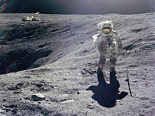

Earth's Moon: Overview
10 Need-to-Know Things About Earth's Moon:
- If the sun were as tall as a typical front door, Earth would be the size of a nickel and the moon would the size of a green pea.
- The moon is Earth's satellite and orbits the Earth at a distance of about 384 thousand km (239 thousand miles) or 0.00257 AU. Six human beings have walked on the moon.
- The moon makes a complete orbit around Earth in 27 Earth days and rotates or spins at that same rate, or in that same amount of time. This causes the moon to keep the same side or face towards Earth during the course of its orbit.
- The moon is a rocky, solid-surface body, with much of its surface cratered and pitted from impacts.
- The moon has a very thin and tenuous (weak) atmosphere, called an exosphere.
- The moon has no moons.
- The moon has no rings.
- More than 100 spacecraft been launched to explore the moon. It is the only celestial a body beyond Earth that has been visited by human beings (The Apollo Program).
- The moon's weak atmosphere and its lack of liquid water cannot support life as we know it.
- Surface features that create the face known as the "Man in the moon" are impact basins on the moon that are filled with dark basalt rocks.


- Just the facts
- Metric | English | Scientific Nataion
- More Facts
384,400 km
Mean Radius:1737.5 km
Volume:21,971,669,064 km3
Mass: 73,476,730,924,573,500,000,000 kg- Resources
- Missions to the Moon
- Images of the Moon
- Videos about the Moon
- NASA's Lunat Portal
- Consolidates Lunar Atlas
- Lunar Sample Laboratory (NASA Johnson Space Center)
- Compare the Moon to other Planets/Moon
- Calendar
- 19 Sep 2013: Full Moon (Harvest Moon)
- 26 Sep 2013: Moon-LADEE Homeschool day (11:00 am-3:00 pm)
- 12 Oct 2013: Skies Daily show - LADEE the first moon Launch from Virginia (1:30 pm - 5:00 pm)
- 12 Oct 2013: International Observe the Moon Night
- 18 Oct 2013: LiveSky Planetarium show ladee
- People Spotlight
- Charles "Karl" Habbits
- Head Lines
- 11 Sep 2013: LADEE Project Manager Update: Initial Checkout Complete
- 7 Sep 2013: LADEE Launches, Heads for the Moon
- 4 Sep 2013: NASA Announces Media, Public Events for Upcoming Lunar Mission Launch
- 4 Sep 2013: LADEE Project Manager Update: LADEE Ready for Launch
- 27 Aug 2013: NASA-Funded Scientists Detect Water on Moon's Surface that Hints at Water Below
- More Headlines
- Science & Technology Features
- 16 Sep 2013: Watch Out for the Harvest Moon
- 3 Sep 2013: NASA Mission To Study Mysterious Lunar Twilight Rays
- 28 Aug 2013: Water on Moon's Surface Hints at Water Below
- 28 Aug 2013: Space Laser To Prove Increased Broadband Possible
- 21 Aug 2013: LADEE Launch Visibility